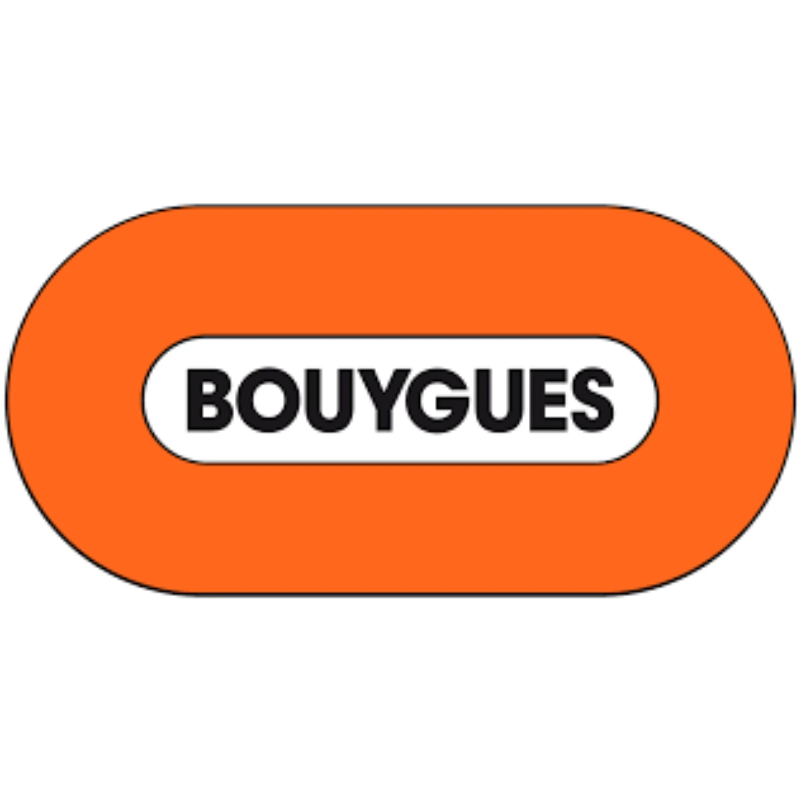
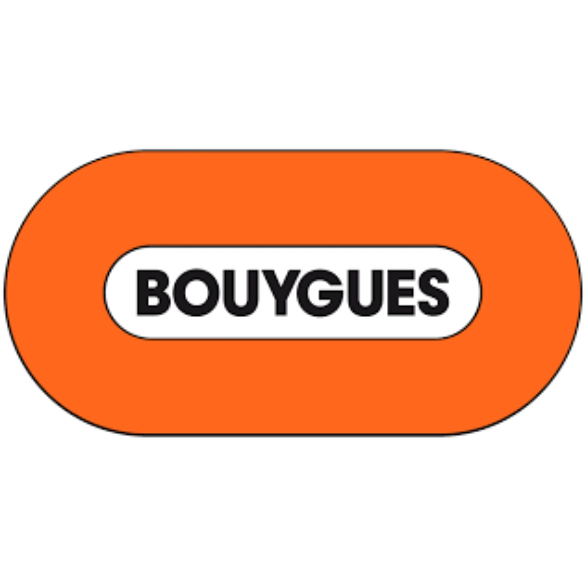
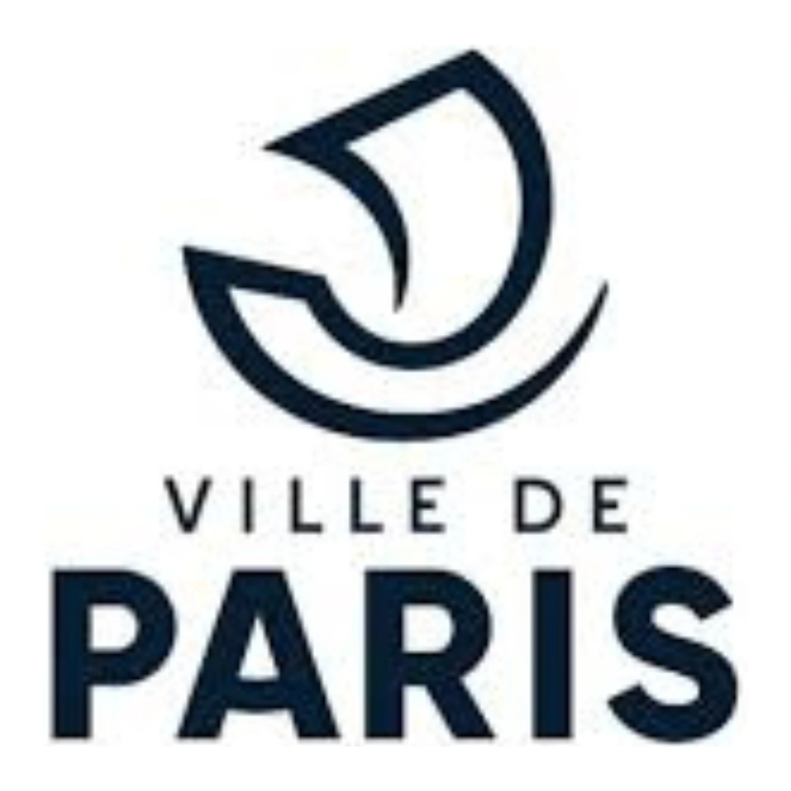
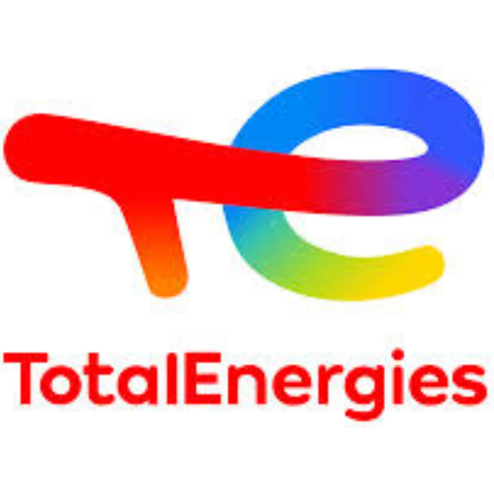
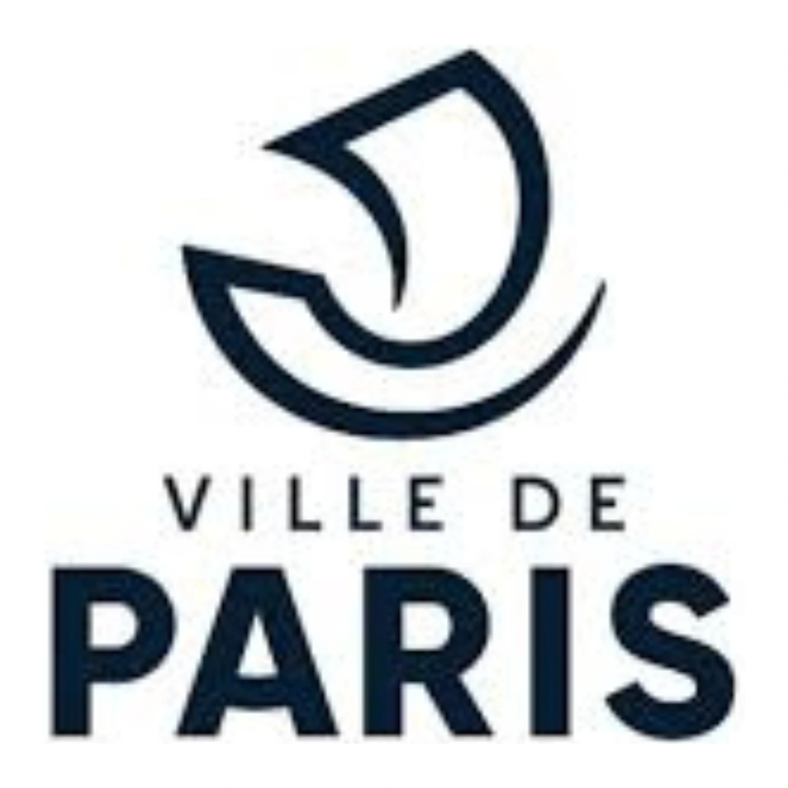
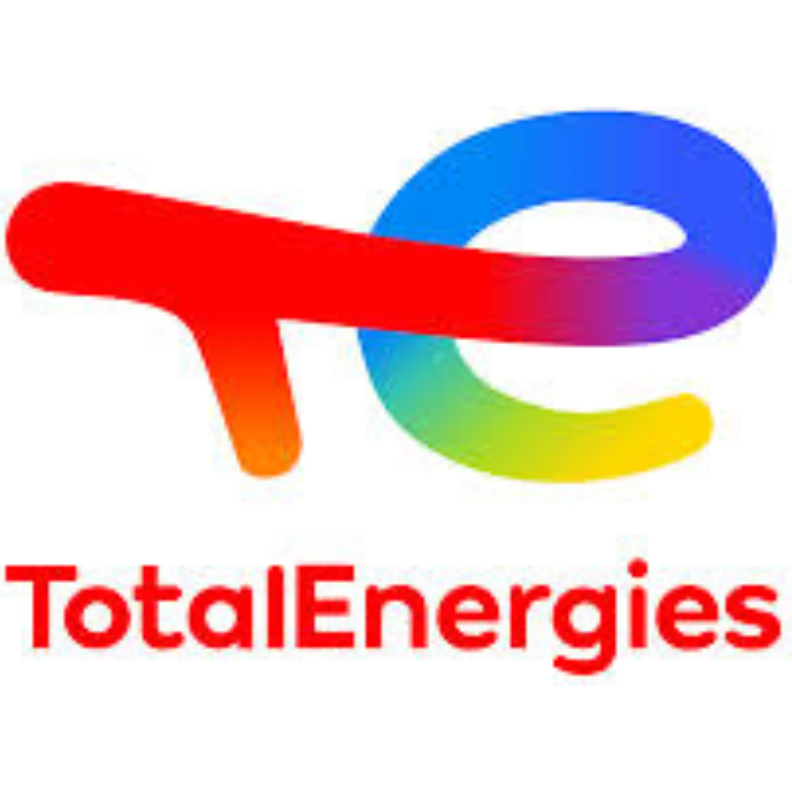

NOS SERVICES

Préservez vos canalisations en optant pour un curage en profondeur. Cette intervention préventive élimine efficacement les bouchons et réduit les risques de pannes. Nos techniciens assurent un entretien durable de votre système d’assainissement individuel.
CONTACTEZ - NOUS
Experts en vidange de fosses septiques et en pompage de bacs à graisse, nous vous proposons des solutions complètes pour assurer l’hygiène et le bon fonctionnement de votre installation d’assainissement.
CONTACTEZ - NOUS
Optimisez l’évacuation de vos eaux usées avec nos pompes de relevage performantes. Pour les particuliers comme pour les professionnels, nous proposons des équipements fiables et adaptés à chaque configuration.
CONTACTEZ - NOUS
Nos équipes prennent en charge tous vos travaux de VRD : pose de réseaux, tranchées, viabilisation. Nous intervenons rapidement avec des prestations conformes aux normes actuelles, adaptées à vos contraintes de terrain.
CONTACTEZ - NOUS
Confiez-nous le raccordement de votre logement au réseau public d’assainissement. Nous réalisons les travaux de terrassement, la pose de tuyaux et la connexion au collecteur communal, dans le respect des normes sanitaires en vigueur.
CONTACTEZ - NOUSNettoyage canalisations : Pour garantir un bon écoulement des eaux et éviter les bouchons, notre équipe réalise un curage complet et régulier de vos canalisations. Nous intervenons dans toute la Alpes-Maritimes avec du matériel professionnel adapté à votre installation.
Raccordement à l’égout : Nous prenons en charge l’ensemble du raccordement au réseau public d’assainissement, de la tranchée initiale jusqu’au branchement final. Assainissement 06 vous assure des travaux conformes aux normes et parfaitement réalisés.
Vidange Fosses Septiques : Pour éviter engorgements et odeurs désagréables, faites confiance à nos professionnels pour l’entretien, la vidange et le nettoyage de votre fosse septique dans le 06. Assainissement 06 intervient rapidement, avec efficacité et précision.
Pompe de relevage : Lorsque l’évacuation des eaux usées ne peut se faire naturellement, nous installons une pompe de relevage fiable et performante. Assainissement 06 accompagne particuliers et professionnels dans toute la Alpes-Maritimes.
VRD – Voirie et Réseaux Divers : Notre entreprise vous propose des prestations complètes de VRD dans le 06. De la viabilisation de terrain à la pose de réseaux, Assainissement 77 met en œuvre des solutions sur mesure pour vos projets de construction ou de rénovation.
UNE ÉQUIPE QUALIFIÉE ET DES ÉQUIPEMENTS PERFORMANTS
Notre expertise en assainissement repose sur une équipe expérimentée et des outils de dernière génération. Qu’il s’agisse du curage de canalisations, de la vidange de fosses septiques, de l’entretien de pompes de relevage ou de travaux de raccordement et VRD, nous proposons des interventions sur mesure, durables et conformes aux normes en vigueur.
DES TARIFS
JUSTES ET TRANSPARENTS
Nos prestations sont pensées pour allier qualité et accessibilité. Que ce soit pour un dépannage ou un projet plus complet, nous vous assurons un excellent rapport qualité-prix. Contactez-nous pour recevoir un devis gratuit et adapté à vos besoins.
DEVIS GRATUITPOURQUOI CHOISIR Assainissement 06 EN Alpes-Maritimes ?
Faire appel à Assainissement 06, c’est bénéficier d’un service fiable, professionnel et réactif. Notre savoir-faire reconnu dans le département repose sur des interventions rigoureuses, de la première expertise jusqu’à la fin des travaux, que ce soit pour un simple curage ou une mise aux normes complète.
DES FORMULES FLEXIBLES POUR PLUS DE TRANQUILLITÉ

INTERVENTIONS À LA DEMANDE
ENTRETIENS ANNUELS
Nos contrats d’entretien sont conçus pour vous simplifier la vie. Chez Assainissement 77, nous garantissons des prestations claires, aux tarifs maîtrisés, que vous ayez besoin d’une intervention ponctuelle ou d’un suivi annuel. Nos services incluent le curage, la vidange, la pose et l’entretien de pompes, ainsi que les travaux de raccordement et de VRD.
INTERVENTION PARTOUT EN Alpes-Maritimes (06)

Absorbex Assainissement 06 se déplace dans l’ensemble du département et les communes voisines. Que ce soit pour une urgence ou un rendez-vous programmé, contactez-nous au 06 48 49 29 10 ou via notre formulaire pour recevoir un devis gratuit. Nos zones d’intervention incluent notamment : Bussy-Saint-Georges – Bussy-Saint-Martin – Chelles – Chessy – Collégien – Croissy-Beaubourg – Dampmart – Émerainville – Gouvernes – Lagny-sur-Marne – Lognes – Montévrain – Noisiel – Pontault-Combault – Roissy-en-Brie – Saint-Thibault-des-Vignes – Serris – Torcy – Vaires-sur-Marne.
UN PARTENAIRE DE CONFIANCE POUR TOUS VOS PROJETS D’ASSAINISSEMENT
Spécialiste reconnu dans le 06, Absorbex Assainissement intervient pour les urgences comme pour les chantiers programmés. Nos engagements : des prestations claires, sans surprise, pour particuliers et professionnels.
Si votre logement est raccordable, nous nous chargeons du branchement au tout-à-l’égout. Sinon, nous mettons en place une solution autonome performante (filtration, tranchées, etc.) pour traiter efficacement les eaux usées.
Disponible 24h/24 et 7j/7, même les week-ends et jours fériés, notre équipe propose également : remplacement de tuyaux, rénovation de réseaux, entretien de collecteurs et vidange de stations d’épuration.
NOS PARTENAIRES
 



 


